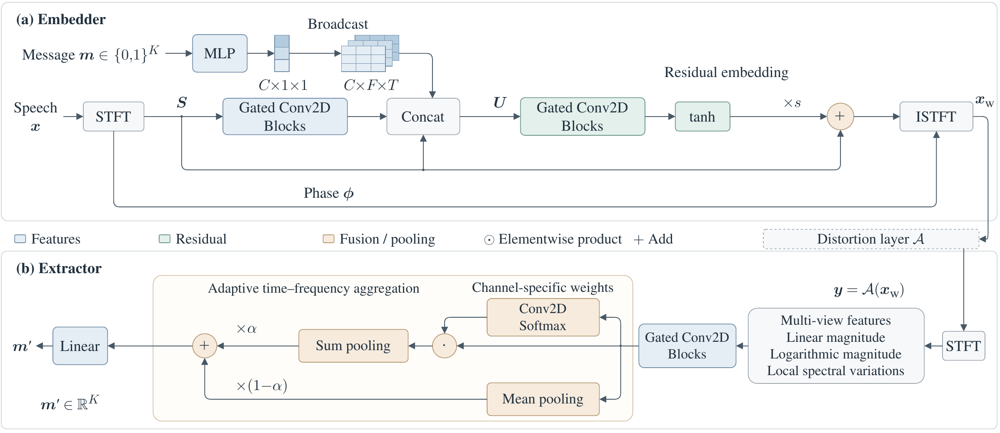

TFMark: Robust Speech Watermarking
via Time–Frequency Embedding
1 University of Science and Technology of China, China
2 The Hong Kong Polytechnic University, China
tangshaoqi@mail.ustc.edu.cn · lipchen@ustc.edu.cn · kong-aik.lee@polyu.edu.hk · zhling@ustc.edu.cn
* Corresponding author
Abstract
Reliable speech watermark recovery after neural compression and waveform reconstruction remains challenging under speech quality constraints. This difficulty may arise when these processes alter the speech features used for message embedding, a single spectral representation does not fully expose watermark information, and aggregation overlooks differences in how information at different time–frequency locations contributes to message extraction. To address this problem, this letter proposes TFMark, a robust speech watermarking method based on a time–frequency embedding strategy. During embedding, a channel representation of the message is broadcast over time and frequency and fused with carrier features to predict a bounded residual, which is scaled and added to the magnitude spectrum. During extraction, complementary spectral views are combined, and channel-specific time–frequency weights are learned to aggregate watermark features alongside mean pooling. Experiments on LibriSpeech show an average true positive rate of 61.43% at a 1% false positive rate across six neural-codec conditions, compared with 46.96% for AudioSeal, the strongest baseline on this average. Under HiFi-GAN reconstruction, the rate reaches 90.93%, while all three baselines remain below 1.5%. The watermarked speech attains an SNR of 30.47 dB and a DNSMOS overall score of 3.242.
Model Architecture

Results
The following samples were selected from the LibriSpeech test-clean set. Original speech is presented alongside speech watermarked using AudioSeal, TimbreWatermarking, WavMark, and TFMark. Three female-speaker samples are followed by three male-speaker samples.
These samples illustrate audio quality before attacks. Headphones are recommended. Playing a sample automatically pauses the other players.
LibriSpeech
| Text | Original | AudioSeal | TimbreWatermarking | WavMark | TFMark |
|---|---|---|---|---|---|
| It's such a crush at the yearly meeting at Arch Street and then there's the row of sleek looking young men who line the curbstone and stare at us as we come out | |||||
| The question is which of the two methods will most effectively reach the persons whose convictions it is desired to affect | |||||
| Her manner was neither independent nor assertive but rather one of well bred composure and calm reliance | |||||
| Either he calls ministers through the agency of men or he calls them directly as he called the prophets and apostles | |||||
| They were upon the verge of an open trap in the far corner of the hut and Stuteley had tripped over the edge of the reversed flap mouth of this pit | |||||
| Mussulmans and Giaours throw kerchiefs at a smile and have no ruth for any weeping |
On smaller screens, scroll the table horizontally to compare all methods.
Sample preparation and comparison settings
All methods were applied to the same complete utterances. The original files were preserved, and watermarked samples were exported as 24-bit PCM WAV files. No attacks or separate loudness/peak normalization were applied. These audio files were re-exported for this listening demonstration.
The native experimental sampling rates were retained: 16 kHz for Original, AudioSeal, and WavMark; 22.05 kHz for TimbreWatermarking and TFMark. Message lengths were 16 bits for AudioSeal and WavMark, and 10 bits for TimbreWatermarking and TFMark. WavMark additionally uses its fixed synchronization pattern. TFMark samples were generated using the epoch-25 checkpoint with embedding scale s = 0.1.
The six examples are provided for informal listening comparison; they do not constitute a subjective listening study or a robustness evaluation.